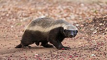
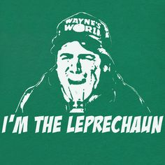
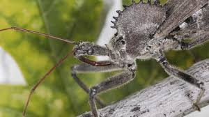

The honey badger (Mellivora capensis), also known as the ratel, is a mammal widely distributed in Africa, Southwest Asia, and the Indian subcontinent. Because of its wide range and occurrence in a variety of habitats, it is listed as Least Concern on the IUCN Red List.
It is the only living species in the genus Mellivora and in the mustelid subfamily Mellivorinae. Despite its name, the honey badger does not closely resemble other badger species; instead, it bears more anatomical similarities to weasels. It is primarily a carnivorous species and has few natural predators because of its thick skin, strength and ferocious defensive abilities.
A leprechaun (Irish: leipreachán/luchorpán) is a diminutive supernatural being in Irish folklore, classed by some as a type of solitary fairy. They are usually depicted as little bearded men, wearing a coat and hat, who partake in mischief. In later times, they have been depicted as shoe-makers who have a hidden pot of gold at the end of the rainbow. Leprechaun-like creatures rarely appear in Irish mythology and only became prominent in later folklore.
A leprechaun usually taking the form of an old man with red or white beard, clad in a red or green coat. Popular depiction shows the leprechaun as being no taller than a small child, with a beard and hat, sitting on a toadstool. However the leprechaun originally had a different appearance depending on where he was found. Before the 20th century, leprechauns were described as wearing red, as opposed to green.
Arilus cristatus, also known as the North American wheel bug, is a species of large assassin bug in the family Reduviidae and the only species of wheel bug found in the United States. It is one of the largest terrestrial true bugs in North America, reaching up to 1.5 inches (38 mm) in length in its adult stage. It is sexually dimorphic, in that males are somewhat smaller than the females. A characteristic structure is the wheel-shaped pronotal armor. North American wheel bugs prey on caterpillars and beetles, such as Japanese beetles, the cabbage worm, orange dogs, tent caterpillars, and the Mexican bean beetle, all of which they pierce with their beak to inject salivary fluids that dissolve soft tissue. The North American wheel bug is most active in daylight, but may engage in predatory behaviors at night in areas illuminated by lights. Because most of its prey are pests, the wheel bug is considered beneficial.
It is camouflaged and very shy, residing in leafy areas and hiding whenever possible. Specifically, habitats of the North American wheel bug include sunflowers, goldenrod, cotton, trunks of locust trees, and various fruit and tree groves. It has membranous wings, allowing for clumsy, noisy flight which can easily be mistaken for the flight of a large grasshopper. The adult is gray to brownish gray in color and black shortly after molting, but the nymphs (which do not yet have the wheel-shaped structure) have bright red or orange abdomens. It was described in 1763 by Carl Linnaeus. Despite the prevalence of the North American wheel bug in many habitats, the information compiled concerning the species is haphazard and incomplete.